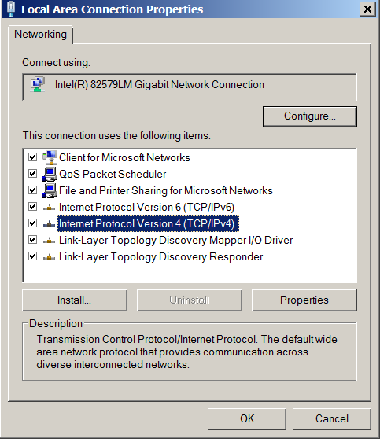
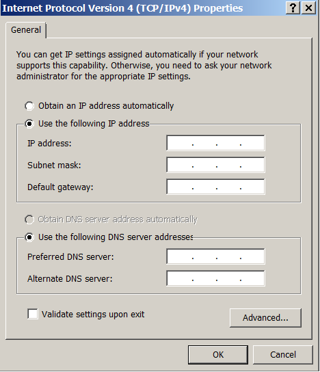

Configure static addressing on DeltaV workstations
- Use the Control Panel and navigate to Network and Internet > View network status and tasks > Change adapter settings.
-
Select the plant LAN adapter, (not the DeltaV Control Network
adapter), on the DeltaV workstation, click the right mouse button, and select
Properties.

-
Select
Internet Protocol Version 4 (TCP/IPv4) and
click the
Properties button.

- Select Use the following IP address and enter the DeltaV workstation's IP address and subnet mask.
- Set the default gateway to the internal address of the firewall so the PC can communicate with the devices on the external LANs.
- Select Use the following DNS server addresses.
- Leave blank the Preferred DNS server and Alternate DNS server entries for now.
- Click OK to save the settings.